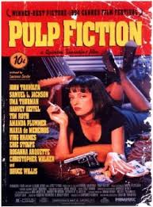
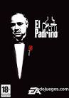
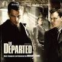

En esta practica vamos a insertar, por medio de la etiqueta ancla, enlaces que nos trasladen dentro de misma pagina, a diferntes apartados. Para ello incluiremos unos apartados basados en las peliculas que hemos utilizado en la practica anterior, creando un apartado por pelicula
August es un niño que nació con un problema de deformidad facial. Esto ha impedido que hasta quinto curso asista a la escuela pública, pero ha llegado el momento de que lo haga. Integrarse no va a ser fácil, pero August pondrá todo su empeño.
ir a esta pagina La vida de un boxeador, dos sicarios, la esposa de un gánster y dos bandidos se entrelaza en una historia de violencia y redención.
ir a esta paginaEl lado oscuro de un trabajador de cuello blanco sale a flote en un club clandestino donde los hombres pelean a muerte.
ir a esta pagina Una adaptación ganadora del Premio de la Academia, de la novela de Mario Puzo acerca de la familia Corleone.
ir a esta pagina Billy Costigan (Leonardo DiCaprio), policía del Sur de Boston, trabaja de forma encubierta para infiltrarse en la organización de la pandilla del jefe Frank Costello (Jack Nicholson). Como Billy se gana la confianza del gángster, un criminal de carrera llamado Colin Sullivan (Matt Damon) se infiltra en la policía y reporta sus actividades a los jefes de su sindicato. Cuando ambas organizaciones descubren que tienen a un enemigo en sus filas, Billy y Colin deben descubrir sus identidades.
ir a esta pagina